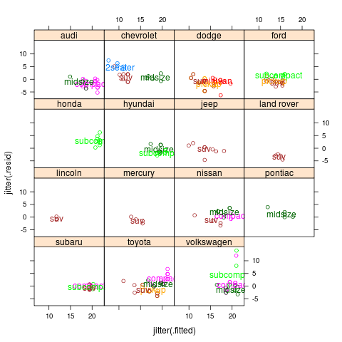
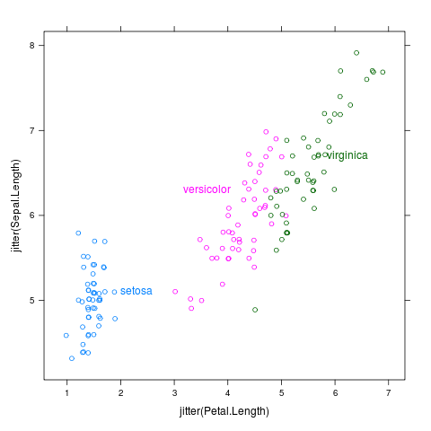
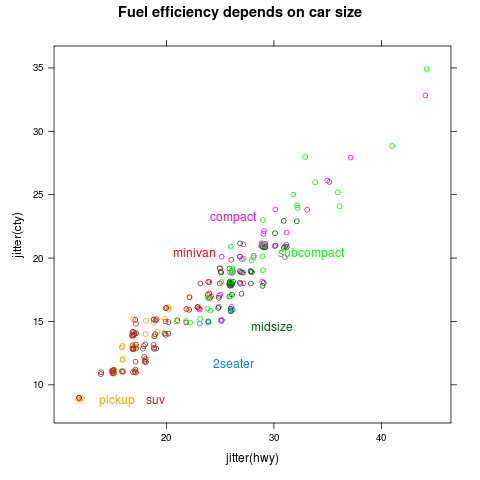

directlabels - scatterplot -
Positioning Function - empty.grid
Label placement method for scatterplots that ensures labels are
placed in different places. A grid is drawn over the whole
plot. Each cluster is considered in sequence and assigned to the
point on this grid which is closest to the point given by
loc.fun().
empty.grid <- function
### Label placement method for scatterplots that ensures labels are
### placed in different places. A grid is drawn over the whole
### plot. Each cluster is considered in sequence and assigned to the
### point on this grid which is closest to the point given by
### loc.fun().
(d,
### Data frame of points on the scatterplot with columns groups x y.
debug=FALSE,
### Show debugging info on the plot? This is passed to loc.fun.
loc.fun=get.means,
### Function that takes d and returns a data frame with 1 column for
### each group, giving the point we will use to look for a close point
### on the grid, to put the group label.
...
### ignored.
){
loc <- loc.fun(d,debug)
NREP <- 10
gridpts <- d
gl <- function(v){
s <- seq(min(gridpts[,v]),max(gridpts[,v]),l=NREP)
if(expand){
dif <- s[2]-s[1]
s <- seq(min(gridpts[,v])-expand*dif,
max(gridpts[,v])+expand*dif,
l=NREP+2*expand)
}
list(centers=s,diff=s[2]-s[1])
}
hgrid <- function(x,w){
hboxes <- floor(diff(range(gridpts[,x]))/r[,w])
(-expand:(hboxes+expand-1))*r[,w]+min(gridpts[,x])+r[,w]/2
}
if(debug)with(loc,grid.points(x,y,default.units="native"))
draw <- function(g){
gridlines <- with(g,list(x=unique(c(left,right)),y=unique(c(top,bottom))))
drawlines <- function(a,b,c,d)
grid.segments(a,b,c,d,"native",gp=gpar(col="grey"))
with(gridlines,drawlines(min(x),y,max(x),y))
with(gridlines,drawlines(x,min(y),x,max(y)))
}
res <- data.frame()
for(v in loc$groups){
r <- subset(loc,groups==v)
no.points <- data.frame()
expand <- 0
while(nrow(no.points)==0){
boxes <- if("left"%in%names(loc)){
list(x=hgrid("x","w"),y=hgrid("y","h"),w=r$w,h=r$h)
}else{
L <- sapply(c("x","y"),gl,simplify=FALSE)
list(x=L$x$centers,y=L$y$centers,w=L$x$diff,h=L$y$diff)
}
boxes <- calc.borders(do.call(expand.grid,boxes))
boxes <- cbind(boxes,data=inside(boxes,d))
no.points <- transform(subset(boxes,data==0))
expand <- expand+1 ## look further out if we can't find any labels inside
}
if(debug)draw(boxes)
no.points <- transform(no.points,len=(r$x-x)^2+(r$y-y)^2)
best <- subset(no.points,len==min(len))[1,]
res <- rbind(res,transform(r,x=best$x,y=best$y))
## add points to cloud
newpts <- with(best,data.frame(x=c(left,left,right,right,x,x,x,left,right),
y=c(bottom,top,top,bottom,top,bottom,y,y,y)))
newpts <- data.frame(newpts,
subset(d,select=-c(x,y))[1,,drop=FALSE],
row.names=NULL)
d <- rbind(d,newpts[,names(d)])
}
if(debug)with(d,grid.points(x,y))
res
### Data frame with columns groups x y, 1 line for each group, giving
### the positions on the grid closest to each cluster.
}
|  |
class-manufacturer
data(mpg,package="ggplot2")
m <- lm(cty~displ,data=mpg)
mpgf <- fortify(m,mpg)
p <- xyplot(jitter(.resid)~jitter(.fitted)|manufacturer,mpgf,groups=class)
direct.label(p,"empty.grid")
|
 |
cylinders
data(mpg,package="ggplot2")
m <- lm(cty~displ,data=mpg)
mpgf <- fortify(m,mpg)
p <- xyplot(jitter(.resid)~jitter(.fitted),mpgf,groups=factor(cyl))
direct.label(p,"empty.grid")
|
|  |
iris
p <- xyplot(jitter(Sepal.Length)~jitter(Petal.Length),iris,groups=Species)
direct.label(p,"empty.grid")
|
|  |
mpglattice
data(mpg,package="ggplot2")
p <- xyplot(jitter(cty)~jitter(hwy),mpg,groups=class,
main="Fuel efficiency depends on car size")
direct.label(p,"empty.grid")
|
 |
mpg
data(mpg,package="ggplot2")
p <- qplot(jitter(hwy),jitter(cty),data=mpg,colour=class,
main="Fuel efficiency depends on car size")
direct.label(p,"empty.grid")
|